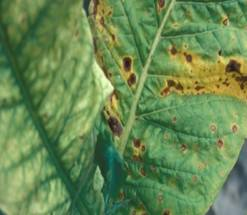
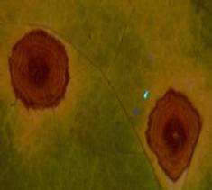

TOBACCO :: MAJOR DISEASE :: BROWN SPOT
Brown spot - Alternaria longipes
Symptoms
Brown spot in contrast to frog-eye spot is not normally observed in the nursery but is very much prevalent in the field. Initially it appears on lower and older leaves as small brown, circular lesions, which spread, to upper leaves, petioles, stalks and capsules even. In warm weather (30˚ C) under high humidity, the leaf spots enlarge, 1-3 cm in diameter, centres are necroses and turn brown with characteristic marking giving target board appearance with a definite outline. In severe infection spots enlarge, coalesce and damage large areas making leaf dark-brown, ragged and worthless. On leaves nearing maturity, leaf spots are surrounded by bright yellow halo, due to production of toxin 'alternin' by the fungus.
|  |  | |
Symptoms |
||
Disease cycle
The fungus over summers in the soil as mycelium in the diseased plant debris such as stems of tobacco, weeds and other hosts. Under favourable weather in the next season conidial production starts which infect the lowermost leaves. As the season progresses, repeated infection cycles of the fungus attack healthy tissues of all aerial parts of tobacco of any age under high humidity. There is enormous spore density in the air near the end of the harvesting. Fungus persists as a mycelium in dead tissue for several months.
Management
- Removal and destruction of diseased plant debris can check the primary infection promptly.
- Continuous growing of tobacco after tobacco must be avoided in the heavily infected fields.
- Weekly, spraying of fungicides such as Maneb or Zineb @ 2g/ha or Benomyl or Thiophanate methyl at 1kg/ha.